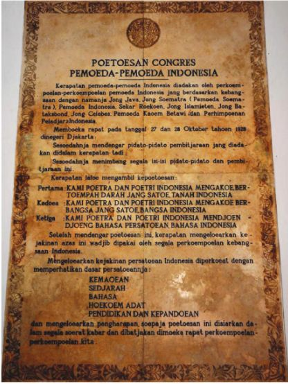
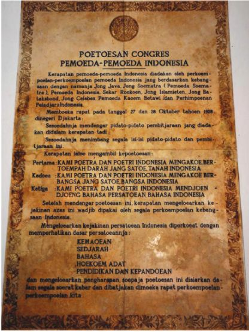

Sumpah Pemuda adalah ikrar yang diucapkan oleh pemuda Indonesia pada 28 Oktober 1928, yang menegaskan persatuan dan identitas bangsa Indonesia. Sumpah Pemuda lahir dari Kongres Pemuda II yang diadakan di Jakarta, di mana pemuda dari berbagai organisasi berkumpul untuk menyatakan tekad mereka dalam memperjuangkan kemerdekaan Indonesia. Sebelumnya, perjuangan bangsa Indonesia masih bersifat kedaerahan, dan Sumpah Pemuda menjadi titik awal untuk menyatukan semua elemen pemuda dalam satu gerakan nasional.
Sumpah Pemuda terdiri dari tiga poin utama yang menegaskan:
 


| Nama lengkap: | Railyn Anabelle Kusnandar |
|---|---|
| Tempat lahir: | Jakarta |
| Tanggal lahir: | 16 November 2011 |
| Tinggi badan: | 162 cm |
| Berat badan: | 52 kg |
| Sekolah: | Santa Laurensia |
| Kelas: | 8C |
| Nomor Absen: | 27 |

| Nama Lengkap: | Matthew Chan |
|---|---|
| Tempat lahir | Jakarta |
| Tanggal lahir: | 06 November 2012 | Tinggi badan: | 160cm |
| Berat badan: | 51kg |
| Sekolah: | Santa Laurensia |
| Kelas: | 8C |
| Nomor Absen: | 23 |